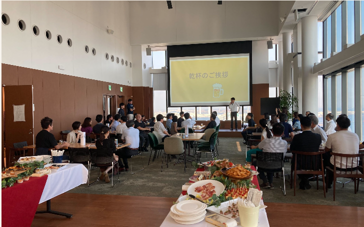

横浜イベント企画書
『偏差値30・40台から、3か月で偏差値50〜60の有名中をつかむ』
― 夏前最後の逆転合格戦略会議 ―
お祭りではなく、夏前最後の戦略会議。「今日来ただけで価値があった」と保護者が思える内容に振り切る。本編の約7割を保護者向けに配分。
日程2026年7月20日（月・海の日）
会場Vlag Yokohama Hall（横浜駅直結・THE YOKOHAMA FRONT 42階）
時間13:00〜16:30（受付 12:50 ／ 12:00 設営 ／ 17:00 撤収完了）
規模親子合計 50〜60名（子供30名前後）
レイアウト島（アイランド）型・テーブル席
設備Wi-Fi完備 ／ 210インチプロジェクター

会場参考：Vlag Yokohama Hall（横浜駅42F）。島（テーブル）レイアウトとプロジェクター投影の実際の様子。今回もこの配置を踏襲する。
イベントの目的（4つ）
なおき先生に会いたい
集客の核。オープニングのつかみ＋懇親会での交流で体験させる。
保護者の悩み解決
夏に何をやれば合格するか／どの学校を狙うか／勉強しない子をどう変えるか。
夏以降の受験戦略
前半「夏休み逆転戦略」「勝てる科目分析」で具体化。
マインドセットの変化
前半導入＋後半「合格マインド設定・宣言」で締める。
タイムテーブル（13:00–16:30）
親 保護者向け
親子 親子合同
子 子供向け（親は観戦）
| 時刻 | 尺 | 内容 | 主役 |
|---|
| 12:00 | — | スタッフ入り・設営（島レイアウト／メダル材料／Kahoot接続テスト／投影確認） | 設営 |
| 12:50 | — | 受付開始 | 受付 |
| 13:00 | 15分 | オープニング・なおき先生登場／つかみ | 親子 |
| 13:15 | 35分 | 夏休み逆転戦略 ― なぜ夏で合否が決まるか | 親 |
| 13:50 | 30分 | 勝てる科目分析 ― 伸ばす科目／捨てる科目の判断 | 親 |
| 14:20 | 30分 | 潜在意識・合格マインドセット | 親 |
| 14:50 | 10分 | 休憩・転換 | 休憩 |
| 15:00 | 20分 | 弱点チェックテスト（Kahoot 全国対戦＋チームバトル・親子参加） ― 各自のスマホ／タブレットで。チーム戦は島ごとに編成。夏前の弱点洗い出しという名目で実施 | 親子 |
| 15:20 | 50分 | メダルづくり＋夏休み計画 同時ワーク × 懇親会（同時進行） ― メダルワーク（EdenQuest連動）と、なおき先生・講師陣との懇親会を同じ時間帯で並行開催 | 親子 |
| 16:10 | 20分 | クロージング ― 合格マインド設定・宣言・記念撮影 | 親子 |
| 16:30 | — | 終了・撤収開始 | 撤収 |
| 17:00 | — | 撤収完了 | 撤収 |
親向け時間 ≒ 本編の約7〜8割。Kahoot＝「弱点チェックテスト」名目で実施（チーム戦含む・親子参加）。2026-07-19変更：潜在意識・合格マインドを10分→30分に拡大／懇親会は単独枠をやめメダルワークと同時開催（ワーク50分に回復）／クロージング（宣言＋記念撮影）を20分に拡大してラストに配置。島レイアウトが座学・Kahoot・ワーク・懇親の全てに対応する。
後半ワーク詳細｜メダルづくり＋夏休み計画（50分・懇親会と同時進行）
「工作の楽しさ」と「受験につながる計画づくり」を1つに統合。手を動かしながら、夏の学習計画そのものを設計する。同じ時間帯に、なおき先生・講師陣との懇親会を並行して行う。
- ① メダルづくり（シール貼り付け作業） ― 3Dプリンターで作った「空のメダル」（見た目だけの本体）に、単元ごとの情報が印刷されたシールをハサミで切って貼り付ける。計画づくりに入ったタイミングで、メダル本体とシール紙を会場中央にどんと用意し、全員で貼り付け作業を行う。
- ② どの単元メダルを夏にやるかを設計 ― 取り組む単元のメダルを選び、夏休みの学習計画として石板に並べる＝学習計画そのもの。
- ③ 各メダルを EdenQuest のステージにリンク ― 夏の間、ステージをクリアするごとに石板が埋まる動線。継続接触＋集客につながる。
- 持ち帰り ― 自分のメダルと石板を持ち帰り、夏の間に埋めていく。
要準備：3Dプリント製の空メダル（参加者数＋予備）／単元情報が印刷されたシール紙／ハサミ（島ごと）／石板（台座）。材料は計画づくり開始時に会場中央へまとめて配置。